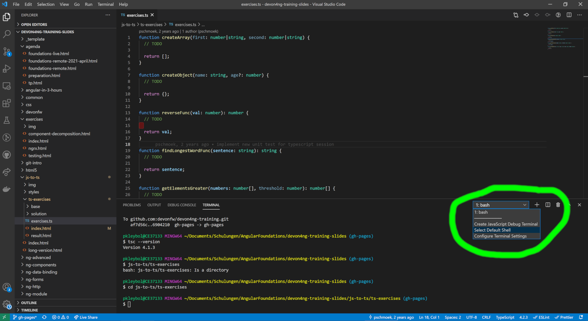

TypeScript Exercises
Goal
- Implement methods in exercises.ts
- Get existing test cases green!
Directly start the exercise using Online IDE
TypeScript Exercises
Alternative local Setup
TypeScript Exercises (1/3)
- Open the training folder in VS Code
(<your-custom-path>/devon4ng-training).
- Open a console (ctrl + shift + ö)
- In the terminal window open the dropdown and select your default shell (or default profile) to git bash
- Press the plus sign to open a new git bash

TypeScript Exercises (2/3)
-
In the console start by installing TypeScript
npm install -g typescript
-
The following command should return the installed version:
tsc --version
-
Run the following 3 commands:
git checkout gh-pages
cd js-to-ts/ts-exercises
tsc -w exercises.ts --lib es2015
TypeScript Exercises (3/3)
-
open devon4ng-training/js-to-ts/ts-exercises/result.html with your browser
-
Now you should see failing UnitTests.
-
Open /ts-exercises/exercises.ts in VS Code and fix them.
With every file change, tsc will recompile and you can refresh your Browser to see the result, e.g. press F5